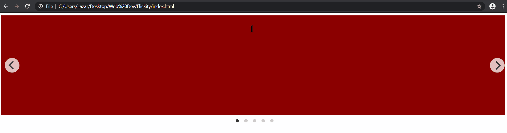

Flickity - jednostavna carousel galerija
Danas ću vam pokazati Flickity, jednostavnu caorusel galeriju sa swipe efektom.
U index.html, dodaćemo stvari potrebne za galeriju, koje možete pronaći na zvaničnom sajtu. CDN fajlove možete naći na početnoj strani. Takođe, trebaće nam jQuery koji možete naći na sajtu. Koristićemo minified verziju jQuery 3.x.
Nakon povezivanja, kod bi trebalo da izgleda ovako:
1 2 3 4 5 6 7 8 9 10 11 12 13 14 15 16 17 18 19 20 21 | <!DOCTYPE html> <html lang="en"> <head> <meta charset="UTF-8"> <title>Flickity</title> <!--- jQuery ---> <script src="https://code.jquery.com/jquery-3.4.1.min.js" integrity="sha256-CSXorXvZcTkaix6Yvo6HppcZGetbYMGWSFlBw8HfCJo=" crossorigin="anonymous"></script> <!--- Flickity files ---> <link rel= "stylesheet" href="https://unpkg.com/flickity@2/dist/flickity.min.css"> <script src="https://unpkg.com/flickity@2/dist/flickity.pkgd.min.js"></script> </head> <body> </body> </html> |
Bitna stvar, jQuery treba da bude linkovan prvi, pre Flickity galerije.
Prvo, inicijalizujemo Flickity preko jQuery-ja odmah ispod zatvorenog body taga:
1 2 3 4 5 6 7 8 9 | <script> $('.main-carousel').flickity({ // options cellAlign: 'center', contain: true, }); </script> |
Sada dodajemo HTML kod na koji će uticati jQuery. Unutar body taga, dodajemo:
1 2 3 4 5 6 7 8 9 | <div class="main-carousel"> <div class="carousel-cell" style="background-color: darkred;width:100%;text-align:center;height:300px;"><h1>1</h1></div> <div class="carousel-cell" style="background-color: yellow;width:100%;text-align:center;height:300px;"><h1>2</h1></div> <div class="carousel-cell" style="background-color: darkgreen;width:100%;text-align:center;height:300px;"><h1>3</h1></div> <div class="carousel-cell" style="background-color: darkblue;width:100%;text-align:center;height:300px;"><h1>4</h1></div> <div class="carousel-cell" style="background-color:darkorange;width:100%;text-align:center;height:300px;"><h1>5</h1></div> </div> |
Dodao sam boje svakoj od ćelija da bi smo lakše videli efekat. Unutar div tagova može biti bilo šta, zavisi šta vam je potrebno.
I to je sve! :)
Možete se igrati sa različitim opcijama koje nudi ova galerija, a koje mogu biti pronađene na njihovom sajtu.
Navešću par primera:
1. Ako želite beskonačni skrol, što znači (u ovom slučaju) da kada stignete do petog div taga,
možete nastaviti dalje što će vas dovesti na prvi div tag, umesto da se vraćate nazad preko svih.
Ova opcija se zove wrapAround i podesite true vrednost u jQuery-ju.
2. Još jedna sjajna opcija je autoPlay, koja automatski menja "slajdove" redom.
Vrednost je u milisekundama što znači da će toliko sekundi određeni slajd biti prikazan, pre prebacivanja na sledeći.
3. Zajedno sa prethodnom opcijom ide i ova, autoPlay automatski prestaje kada pređete mišem preko galerije,
tako da ja lično volim da isključim ovo, tako da uvek automatski menja slajdove.
Ova opcija se zove pauseAutoPlayOnHover i vrednost se postavi na false.
Sada, naš jQuery kod bi trebalo da izgleda ovako:
1 2 3 4 5 6 7 8 9 10 11 | <script> $('.main-carousel').flickity({ // options cellAlign: 'center', contain: true, autoPlay: 1500, pauseAutoPlayOnHover: false, wrapAround:true }); </script> |
Na ekranu bi trebalo da vidite nešto poput ovoga:
Hvala što ste čitali, nadam se da je bilo korisno. :)